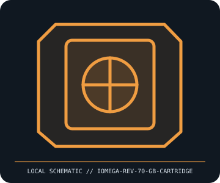

[ REMOVABLE MEDIA // INDIVIDUAL RECORD ]
Iomega REV 70 GB Removable Cartridge
Iomega REV removable rigid-disk cartridge, 70 GB generation. This entry describes the identified medium or reader, not a bundled drive/media pair; exact capacity and compatibility are model- and host-dependent.

IDENTIFICATION: Record the full label, manufacturer part number, revision/date code, format markings, and packaging. Product-family names alone do not identify capacity generation or supported drive.
Format and compatibility
| Catalog subcategory | Tape and optical cartridges |
|---|---|
| Catalog identity | Iomega REV 70 GB Removable Cartridge |
| Format / era | Iomega REV removable rigid-disk cartridge, 70 GB generation |
| Media/device distinction | This record is the removable medium only; the compatible drive is separate and not included. |
| Capacity / interface | 70 GB nominal capacity in a sealed removable rigid-disk cartridge system. REV cartridges are purpose-built media with the recording mechanism in the cartridge; this record is the cartridge only, not the dock/drive. |
| Compatibility | Requires an Iomega REV 70 GB-compatible drive/dock and its supported host interface/software. REV 35 GB and 70 GB generations and later REV variants must not be assumed interchangeable; follow the drive manual for read/write support. |
| Variant caveat | Iomega sold multiple REV capacities and interface variants. Verify the exact cartridge generation and dock model, and distinguish REV from Zip/Jaz cartridges despite the shared Iomega brand. |
Media care and preservation
Keep the cartridge in its protective case; avoid drops, vibration while operating, strong magnetic fields, dust, and temperature shock. Do not open the sealed shell. Treat it as a single mechanical drive copy: make verified redundant copies and test restore before relying on archived data.
- Preserve original packaging, labels, and acquisition/context notes; photograph both sides and record any write-protect state before use.
- Keep valuable contents in at least two independently verified copies on separate storage. Record a checksum and test a restore; removable media alone is not a preservation plan.
Model and version caveats
Iomega sold multiple REV capacities and interface variants. Verify the exact cartridge generation and dock model, and distinguish REV from Zip/Jaz cartridges despite the shared Iomega brand.
Compatibility statements are limited to the named format/model and published host support. Check manufacturer manual, firmware, regional SKU, and media generation before inserting or writing. A similar connector or cartridge shell is not proof of compatibility.
Sources & further reading
- Iomega / Lenovo — REV support and manuals archiveManufacturer support entry point for legacy Iomega products; verify the exact REV cartridge/dock revision against its manual.
- Computer History Museum — Collection searchHistorical collection reference for Iomega REV removable storage; catalog descriptions may cover family-level product variants.
Sources identify the relevant standard, manufacturer, or product family. Where an archived SKU-specific datasheet is unavailable, the exact label/manual and supported host list take precedence over family-level marketing claims.